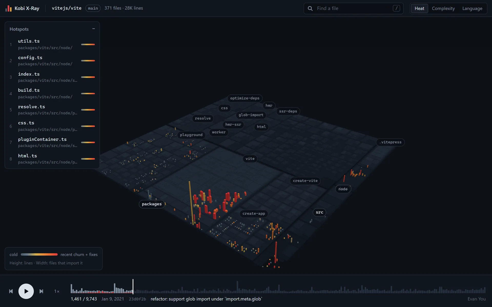
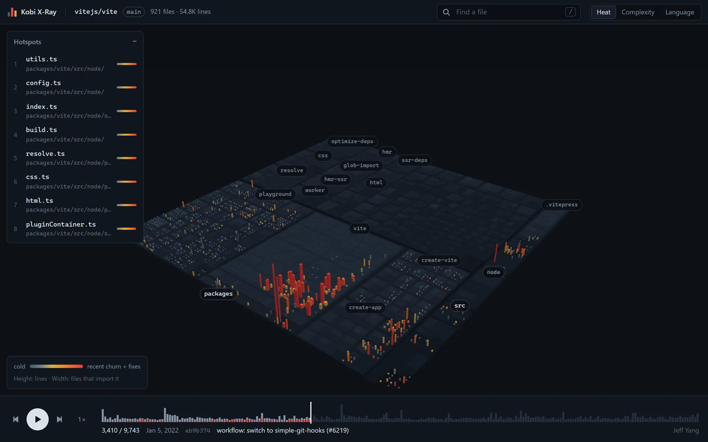
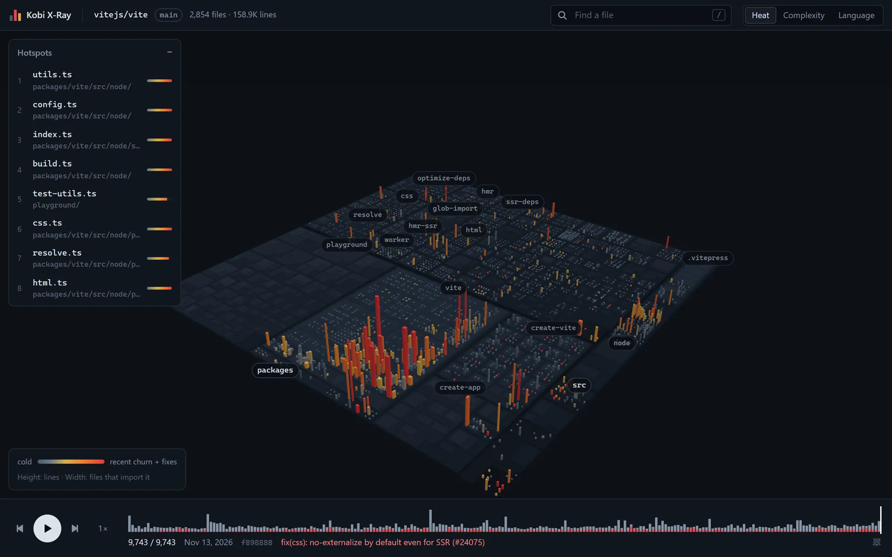
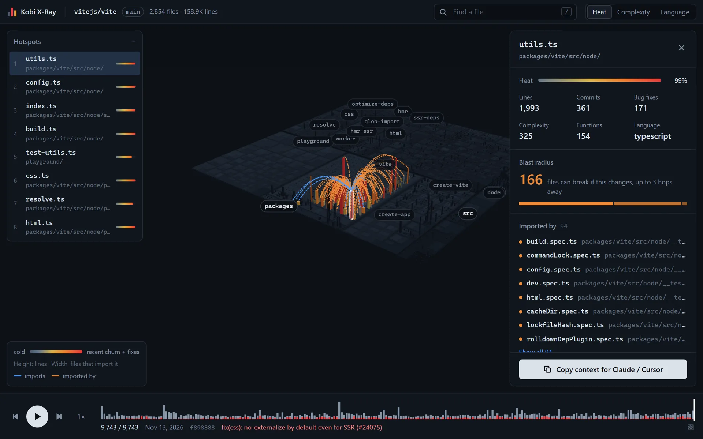
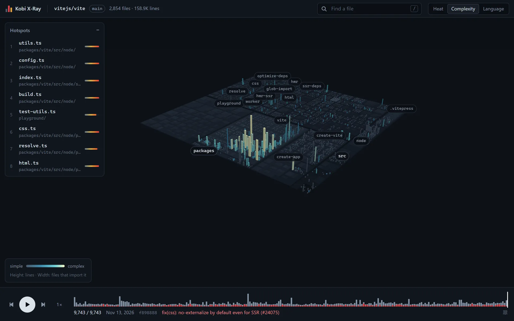
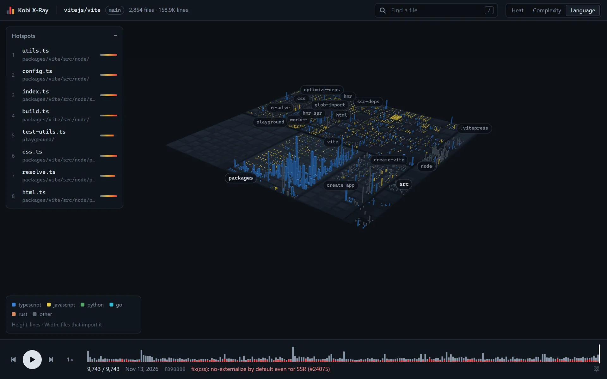

Structural blindness
A folder tree does not show coupling. Nothing tells you that touching
auth.ts quietly breaks forty modules.
Codebase time-travel & architecture X-ray
Kobi X-Ray turns any Git repository into a navigable 3D map. Files are buildings,
folders are districts, and a timeline replays every commit from the first one to
HEAD.
Open source · runs on your machine · no code leaves it
A generated demo city. Drag to travel in time.
Measured on vitejs/vite, on a laptop
The problem
Joining a team, auditing legacy code or reading a large open-source project all start the same way: thousands of files and no map.
A folder tree does not show coupling. Nothing tells you that touching
auth.ts quietly breaks forty modules.
git log is a wall of text. It does not show which files change every week
and collect the bug fixes.
Before asking an agent to refactor, someone has to understand the architecture, or the agent gets steered straight into a hole.
Reading the city

Lines of code. Skyscrapers are the files nobody wants to open.
The more files import it, the wider its base. Wide buildings carry weight.
Recent churn, with bug-fix commits counted double. It cools with a 90-day half-life.
Nested directories stack like terraces, so the map follows the tree you know.
Tall, wide and red is the combination to worry about: a large file many others depend on that keeps changing.
Features
Every screenshot below is the Vite repository, untouched.
Drag the timeline or press play and watch the city being built: districts appear, a file grows out of control into a red tower, then gets split into smaller ones.



Click any building. Arcs light up what it imports and what depends on it, and the panel counts every file that can break if you change it, hop by hop.
packages/vite/src/node/utils.ts changes. It has 361
commits, 171 of them bug fixes.

Switch what colour means without losing your place. Hotspots are ranked live for the moment in history you are looking at.
Where the work and the bugs are right now.


One click copies a Markdown briefing of a file or a whole module: what it imports, who depends on it, its blast radius and its history. Paste it into Claude Code or Cursor before the refactor.
# X-Ray context: `packages/vite/src/node/utils.ts`
Repository: **vitejs/vite** (main @ f89888822)
## Summary
- Language: typescript
- Size: 1989 lines (1786 non-blank), 154 functions
- Cyclomatic complexity (whole file): 325
- Fan-in: 94 files import it
- Fan-out: 11 internal imports
- Churn: 361 commits (171 bug fixes), +3456/-1463 lines
## Imported by (direct dependents)
- `packages/vite/src/node/build.ts` — 2002 lines, complexity 237
- `packages/vite/src/node/config.ts` — 2971 lines, complexity 282
- …and 92 more
## Blast radius
166 files depend on this file directly or transitively
(94 direct, up to 3 hops away).How it works
The city and the time machine cost nothing to run: no server, no model, no upload. The analysis happens in the CLI and the result is rendered by your GPU.
Lists the files Git knows about, honouring .gitignore, skipping
lockfiles, binaries and build output.
tree-sitter grammars compiled to WebAssembly extract imports, functions and cyclomatic complexity.
Imports become edges: relative paths, tsconfig aliases, workspaces,
go.mod modules and Rust crates.
One git log --numstat pass becomes a compact timeline of every line added
and removed.
A treemap lays out the districts; one instanced mesh draws every building in a single draw call.
Every other text file still gets a building, with height and heat.
Pricing
Paid plans are planned for teams that want this on private repositories, continuously.
Free
For developers and the community
$19 / month
For tech leads and staff engineers
Custom
For CTOs and engineering organisations
Roadmap